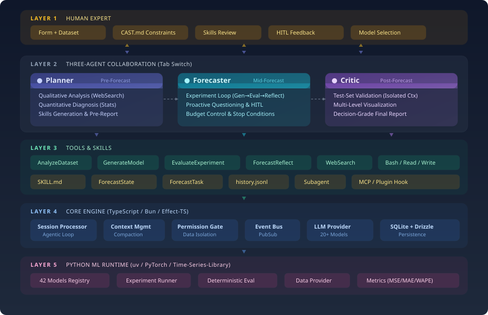

在能源调度、金融风控、工业智能等关键领域中，时间序列预测是支撑决策的重要基础。从最早的统计模型，到机器学习驱动的端到端方法，研究者不断尝试提升模型对复杂动态系统的刻画能力。然而，随着真实场景中数据非平稳性增强、情境因素日益复杂，传统“给定历史-预测未来”的建模范式，正在逐渐触及其能力边界。
当前时序预测正面临一个显著的困局：模型虽然在基准数据集上不断刷新精度指标，但在真实复杂环境中却往往表现出脆弱性。一方面，模型缺乏对情境信息的深度理解，难以应对分布漂移与突发事件；另一方面，预测过程高度“黑箱化”，缺乏可解释的推理路径，也无法在关键决策节点引入人类经验与领域知识。这种“单次前向推理”的范式，使得模型难以像人类专家一样，通过分析、判断与反思不断修正预测结果。
针对这一挑战，中国科学技术大学认知智能全国重点实验室团队提出了一种全新的范式：基于自主决策与人机协同的时序预测智能体 CastClaw。该方法不再将预测视为一次性输出，而是将其重构为一个“感知-推理-决策-反思-进化”的多轮交互与动态演化过程。CastClaw 通过构建可交互的预测环境，使模型能够主动调用工具、分析数据结构、识别关键变化模式，从而逐步逼近更可靠的未来趋势。
进一步地，CastClaw 突破了传统模型“被动响应”的局限，具备与环境进行自主交互的能力。它可以模拟人类在面对复杂时序问题时的思维方式，对趋势变化进行多步推理与假设验证；在关键节点上，还能够引入人类专家的判断，实现人机协同决策。同时，借助模块化的 Skill 机制，CastClaw 可以不断积累经验、调用新能力，实现持续学习与自我进化。这种从“模型预测”迈向“智能体决策”的转变，或将为时间序列研究打开一条通往认知智能的新路径。
CastClaw 通过三个职责分明的专属智能体协同工作，使用 Ctrl+1 / Ctrl+2 / Ctrl+3 在 TUI 中切换。每个智能体维护独立上下文，通过 .forecast/ 文件协议共享状态。
负责任务定义、数据诊断与阶段编排。并发启动两条分析轨道：定性域研究（WebSearch）+ 定量数据统计，融合为预测前报告。生成 2–4 个技能文件供人工审核确认。
驱动迭代实验循环——读取最佳结果与失败历史，从技能中选取模型配置，调用 generate_model 训练评估，进行反思记录，管理实验预算。停滞时触发 HITL 暂停等待人类反馈。
读取所有实验产物，生成各模型族最佳结果对比、按时序特征的性能分解、可视化脚本，以及结构化的最终 Markdown 预测报告，输出至 .forecast/reports/final-report.md。
CastClaw 不追求让人类完全退出预测流程，而是在关键决策与关键结果上保留人工确认。研究者可以在高价值节点注入领域知识、修正偏差并确认下一步策略，从而获得更高精度、更可信的预测结果。
在初始化阶段，由人类确认目标列、时间列、预测步长、评估指标和资源约束，避免任务定义偏差在后续实验中被持续放大。
Planner 生成技能草案后，研究者会审核模型族选择、参数搜索空间与风险警告，确保实验策略符合数据特征与领域先验。
当实验停滞、结果显著变化或生成候选最优方案时，人类对关键结果进行确认与干预，帮助系统纠偏并指导下一轮更高精度的预测探索。
CastClaw 将 Planner 生成并经人工审核的技能文件视为可以长期积累的系统经验。这些 Skill 不只服务于单次实验，而是会持续沉淀模型选择策略、参数搜索空间、适用条件与风险提示；随着 Skill 的不断积累，CastClaw 可以在新任务中更快启动、更准决策，并逐步实现面向预测任务的自主进化。
将模型配置、适用数据特征、参数搜索空间和风险警告写成结构化技能文件，避免经验只停留在单次实验里。
Skill 不会直接自动进入实验循环，而是先经过人工确认，再作为可信策略被长期保留，确保系统的后续进化建立在高质量经验之上。
面对相似的数据形态、预测步长或资源约束时，CastClaw 可以从已有 Skill 出发完成更快的任务初始化、更合理的实验设计和更高精度的预测探索，表现出随经验积累而增强的自主进化能力。
采用 CLI-TUI 作为主要交互界面，不引入额外 Web 服务。研究者可以在终端里直接切换智能体、查看状态、审核结果，保持研究流程的轻量与高效。
在任务设定、技能审核、实验停滞处理和关键结果判断等节点保留人工确认，把领域知识注入流程，避免自动化系统在错误方向上持续放大偏差。
通过 .forecast/ 工作目录协议组织任务状态、实验记录与报告产物，让多智能体协作过程始终可见、可审查、可复现，而不是隐藏在不可解释的内部状态里。
这套设计的核心取舍是：自动化负责效率，人类负责关键判断。CastClaw 不是替代研究者，而是帮助研究者更系统地组织预测流程、探索模型空间并沉淀可复用经验。
CastClaw 以 CLI-TUI 为交互界面，三个智能体共享 .forecast/ 文件协议实现状态同步。LLM 层通过 Vercel AI SDK 解耦，支持 20+ 提供商无缝切换；Python ML 后端由 uv 管理，generate_model 工具自动调用，无需手动介入。

关键设计决策：阶段转换由 forecast_state 工具在文件系统层强制执行，而非依赖智能体自律性。即使 LLM 产生幻觉也无法跳过阶段，确保流程可靠性。CAST.md 约束文件在每次 Agent 初始化时自动注入上下文，实现项目级行为约束的持久化。
实验停滞或连续无改善时，Forecaster 自动暂停并请求人类反馈。你的领域知识将被记录为专家输入，重置无改善计数器后继续探索。
并发运行定性域研究（网络调研行业背景、风险因素）与定量数据诊断（趋势、季节性、平稳性、异常值），融合为驱动后续模型选择的分析报告。
Planner 基于分析报告生成结构化技能文件，含适用条件、参数搜索空间与风险警告。人工确认通过后才进入实验阶段，避免盲目跑模型。
通过 CAST.md 或默认值设定最大实验次数、连续无改善阈值与崩溃阈值。预算追踪实时更新，防止资源浪费。
项目级约束自动注入每个智能体上下文：禁用模型列表、资源限制、评估偏好、领域说明。使用 /cast-creation 交互式生成。
涵盖经典统计模型（ARIMA、ETS、Theta）、主流深度学习架构（PatchTST、iTransformer、TimesNet 等）及基础预训练模型（Chronos、TimesFM、Moirai）。
CastClaw 将数据科学中的数据分析方法、机器学习模型中的特征工程经验，以及经典时序模型与时序基础模型的思想，统一封装为可调用的运行时工具能力。它们既可以直接服务于具体预测任务，也可以通过 MCP 等协议持续扩展，形成一个面向时序预测、可继承、可组合、可演进的工具箱。
负责把智能体决策落到可复现的训练与评估过程，强调环境隔离、自动执行与失败收敛。
CastClaw 的 Python 后端以独立的 uv 虚拟环境运行，与宿主系统完全隔离。generate_model 工具以标准化接口触发训练与评估，结果自动写回 .forecast/runs/；崩溃或超时由沙盒捕获，不影响主智能体上下文。所有模型调用均无需研究者手动干预。
uv 虚拟环境与宿主隔离，依赖版本锁定，跨机器可复现。
Forecaster 通过 generate_model 调用沙盒，训练日志与评估指标自动归档。
训练崩溃或超时由沙盒捕获，不中断智能体主流程，失败记入实验历史。
将数据分析、时序特征诊断与模型资产封装成可组合的能力层，支撑技能生成、路线筛选与不同模型族的系统探索。
在进入时序特征诊断之前，CastClaw 也可以调用通用数据分析工具，对数据集完成基础画像与探索性分析，为后续特征工程、技能生成和模型选择提供更稳固的分析基础：
Planner 在预测前分析阶段调用数据诊断能力，全面刻画数据集统计特征，为技能生成和模型选择提供量化依据：
任务解析、目标列/时间列确认、特征分析、趋势与季节性诊断、异常值识别、WebSearch 定性研究、技能草案生成与约束注入。
读取实验历史、选择技能与配置、调用 generate_model、预算检查、失败归因、forecast_reflect 反思记录，以及 HITL 暂停与反馈融合。
聚合结果、按时序特征拆解性能、对比模型族表现、生成可视化脚本、整理结论和输出最终 Markdown 报告。
对于特征分析、摘要整理、技能草案生成、实验反思等高频辅助任务，CastClaw 可以接入可配置的轻量模型池，以更低成本支持多轮协同。具体供应商和型号并不固定，可按部署环境自由替换。
这样的分工让 CastClaw 既能保持多智能体协同的响应速度，又能把更昂贵的大模型调用留给真正需要综合判断的阶段。
CastClaw 遵循严格的 Agentic Workflow，阶段转换由 forecast_state 工具强制执行——不可跳过任何阶段，确保每次实验过程可追溯、可复现。
定义预测任务：数据集路径、目标列、时间列、预测步长（Horizon）、回看长度（Look-back）、训练/验证/测试分割比例、评估指标与考虑的模型族。Planner 调用 forecast_state init 创建 .forecast/ 目录，forecast_task 冻结 task.json。可选使用 /cast-creation 生成项目约束文件。
Planner 并发启动两个子智能体：定性轨道网络调研预测领域（行业背景、关键事件、风险因素）；定量轨道分析数据集统计特征（趋势、季节性、平稳性、波动率、异常值）。双轨结果融合为 .forecast/reports/pre-forecast.md，驱动后续所有模型选择决策。
基于预测前分析，Planner 生成 2–4 个结构化技能文件，每个文件包含：适用条件、参数搜索空间、特征模板（配置 JSON）及针对当前数据集的风险警告。人工审核并确认后，阶段正式过渡到实验循环。
Forecaster 使用已确认技能迭代实验：读取当前最佳结果与近期失败历史 → 选取模型与配置 → generate_model 训练评估 → forecast_reflect 反思记录 → 预算检查 → 循环。停滞时触发 HITL 暂停，等待并融合人类领域反馈后继续。
Critic 读取全部实验产物，生成：各模型族最佳结果对比、按时序特征（趋势/季节性/平稳性）的性能分解、可视化脚本（时序图、误差分布图），以及结构化最终预测报告，输出至 .forecast/reports/final-report.md。
CastClaw 通过主力模型与轻量 LLM 的分层协作完成不同复杂度的任务，同时依托 Bun、Python/uv 与 Vercel AI SDK 组成跨 TypeScript 与 Python 的运行环境。
特征摘要、技能草案生成、实验反思、结果整理等高频短上下文任务，可配置轻量模型处理，大幅降低整体调用成本：
CLI 运行时与包管理器，驱动 TUI 界面与智能体编排层。
ML 后端运行环境，uv sync 一键安装全部依赖，无需手动管理虚拟环境。
LLM 提供商抽象层，支持 20+ 提供商（Anthropic、OpenAI、Google、OpenRouter 等），格式 provider/model-id。
TUI 启动后，在 Planner 标签页（Ctrl+1）中输入任务描述：
下面给出一个电力负荷预测任务的完整示例，展示如何在 Planner 中描述任务，以及如何通过 CAST.md 预先写入实验约束。
在 Planner 标签页中，可以直接输入如下任务描述，让 CastClaw 建立预测任务并进入后续分析与技能审核流程：
如果希望在任务开始前就固定实验边界，可以在项目目录写入如下 CAST.md，用于约束实验过程中的安全性与预算控制：
CastClaw 由中国科学技术大学认知智能全国重点实验室 AGI 组构建。
| 角色 | 成员 |
|---|---|
| 团队骨干 | Tian Gao · Xiaoyu Tao |
| 指导教师 | Mingyue Cheng · Qi Liu · Enhong Chen |
CastClaw 借鉴了 OpenCode（CLI 框架基础）与 Time Series Library（ML 后端模型库）的源代码，在此致以诚挚感谢。
如果 CastClaw 对你的研究或项目有帮助，欢迎引用：